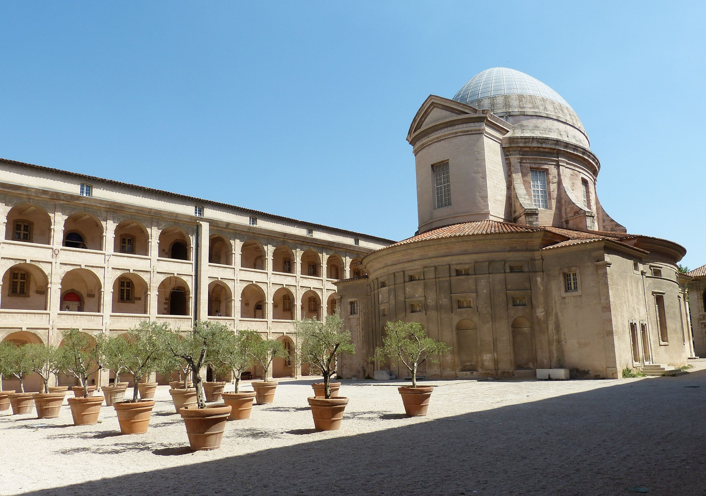

Les nombreux musées de Marseille proposent
des expositions permanentes ou temporaires
autour de thèmes variés : Histoire de Marseille,
mode, Antiquité, Histoire Naturelle ou encore art
contemporain. Installés dans des édifices patrimoniaux
du XVIIe siècle ou d’architecture récente, les musées
de Marseille sont répartis dans plusieurs quartiers.
Le Mucem
Trois sites, trois ambiances pour des propositions riches et surprenantes
à découvrir sur 40 000 m2 : le Mucem est un vrai musée du XXIe siècle,
capable de séduire un vaste public avec une large palette d'activités.
Les uns pourront voyager grâce aux expositions, les autres profiter d'une lecture,
d'un concert, d'un débat, d'une projection... ou plus simplement d'une promenade
en plein air dans les jardins méditerranéens du fort Saint-Jean.
Le J4 : 15 000 m2.
Le nouveau musée, bâti sur l'ancien môle portuaire J4 par l'architecte Rudy Ricciotti,
constituera le coeur palpitant du Mucem. Au rez-de-chaussée, une exposition de référence
pour un parcours permanent sera dédiée à la présentation des étapes majeures de l'histoire
des civilisations méditerranéennes. Au second étage, deux grandes expositions par an seront
consacrées aux sociétés, aux villes, aux lieux ou aux hommes qui font la Méditerranée.
Le fort Saint-Jean : 15 000 m2.
Les salles voutées abritées dans les entrailles de pierre du fort Saint-Jean, monument historique
du XIIe siècle, proposeront des galeries d'exposition sur les thèmes de la fête et des spectacles.
Expositions permanentes:
La Galerie de la Méditerranée fait peau neuve : à partir de fin novembre 2017, sa deuxième section
accueille une nouvelle exposition semi-permanente. " Connectivités " raconte une histoire des grandes
cités portuaires de la Méditerranée des XVIe et XVIIe siècles : Istanbul, Alger, Venise, Gênes, Séville
et Lisbonne sont alors les points stratégiques de pouvoir et d'échanges dans une Méditerranée qui voit
naître la modernité entre grands empires et globalisation.Le Mucem conserve un patrimoine unique,
regroupant une diversité d'objets originale dans le monde des musées : tableaux, estampes ou sculptures
côtoient mobilier, outillage, véhicules, bijoux, décors de boutique, vêtements de fête ou traditionnels...

La Vieille Charité
Lieu emblématique de Marseille, la Vieille Charité est nichée au cœur du Panier,
le noyau historique de la ville. Merveille de l’architecture du XVIIe siècle,
La Vieille Charité symbolise à la fois la richesse du patrimoine marseillais
et offre à la ville un haut lieu culturel. Restaurée, la Vieille Charité est
devenue, depuis 1986, un centre pluridisciplinaire à vocation scientifique et
culturelle de la Ville de Marseille. Elle est classée au titre des Monuments
Historiques.
En 1640 le Conseil de Ville décide, selon la politique royale de « grand renfermement des pauvres »
de rassembler dans un lieu propre les pauvres natifs de Marseille.
Il fallut attendre 1654 pour que les dirigeants envisagent de construire
un ensemble d’immeubles plus appropriés aux besoins car il y avait déjà à
cette époque plus de 300 pauvres à la Charité.
En 1670, une association caritative au sein du Conseil des Echevins confie
à Pierre Puget, architecte du roi et enfant du quartier, la réalisation d’un
Hôpital Général pour accueillir les mendiants et les pauvres.
C’est seulement en 1671 qu’est posée la première pierre de ce qui sera
l’une des plus belles réalisations architecturales de Pierre Puget.
La construction de la Vieille Charité de Marseille s’achève en 1749.
L’ensemble se compose de quatre ailes de bâtiments fermés sur l’extérieur
et ouverts par une galerie à 3 niveaux sur une cour rectangulaire intérieure.
Ils desservent de vastes espaces collectifs de travail et de vie, séparant les
femmes des hommes.
Au centre de la cour, la chapelle construite entre 1679 et 1707 est une œuvre
architecturale remarquable à dôme ovoïde, parfait exemple du pur baroque italien.
La façade actuelle, laissée en attente, date de 1863, et reprend le thème de la Charité.
Après la Révolution et jusqu’à la fin du XIXe siècle, la Charité devient un hospice
réservé aux vieillards et aux enfants.
En 1905, le bâtiment est occupé par l’armée et sert par la suite d’abri aux plus démunis.
Laissée à l’abandon après la Seconde Guerre mondiale, et vouée à la démolition, la Vieille
Charité est occupée seulement par des habitants pauvres vivant dans des conditions misérables.
La Vieille Charité est finalement classée au titre des Monuments Historiques en 1951 sous
l’impulsion de l’architecte de la Cité Radieuse, Le Corbusier.
En 1961, les travaux de restauration débutent et durent près de 25 ans.
En 1962, tous les résidents furent relogés et le bâtiment fermé.
Depuis 1986, c’est un centre pluridisciplinaire à vocation scientifique et culturelle
de la Ville de Marseille.
a Vieille Charité se compose de quatre ailes de bâtiment fermées sur l’extérieur et
ouvertes sur une cour rectangulaire par des galeries sur trois niveaux qui rythment
la vie à l’intérieur de l’édifice.
Le corps de ces bâtiments est fait de trois étages de galeries superposées avec des
arcades en plein centre s’ouvrant sur une cour intérieure où se trouve une chapelle.
Au centre de ce quadrilatère, en direction de la porte d’entrée, se trouve une chapelle
surmontée d’une coupole elliptique de style baroque. Le porche à colonnes corinthiennes,
d’architecture Second Empire, reprend le thème de la Charité accueillant les enfants indigents.
Elle fut bâtie entre 1861 et 1863.